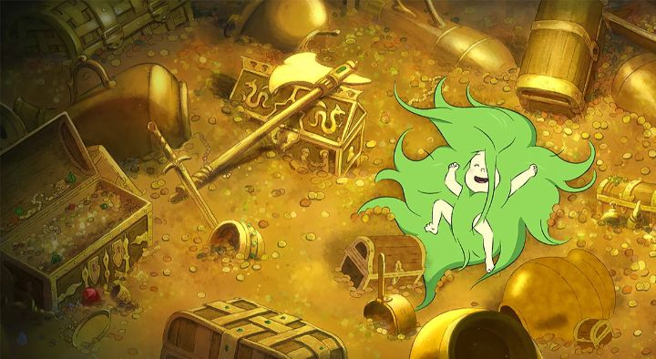

At 2022's Fantasia Film Festival, the first movie a saw was the French animated film "Princess Dragon" (listed by the French title "Princesse Dragon"). And what a marvelous way to start a festival! This was a complete delight and surprise, a smart female-empowering fairy tale that was endlessly entertaining.Starting off the bat with tongue-in-cheek humour, a frog-witch (with the bulbous head of a frog on a human body) narrates the story. It starts with a great and powerful dragon (named "Dragon"), who has all the respect and fear and treasure he could want, but wishes for one thing: a family. The witch offers him three eggs to hatch children, but states the time will come when he must give the witch the second-most important thing to him in exchange ("not the first?"). The eggs hatch, with two baby lizard dragons, and one... human baby with wild green hair. Hating humans more than anything, Dragon nearly abandons the third child, but when witnessing her spirited nature and ability to breath fire, he accepts her as his own. Years later, the human-dragon (named "Bristle" in the English subtitles for the movie) discovers a human from a nearby kingdom, named Princess. They become fast friends, but showing her the Dragon's cave full of treasure puts them in danger. Dragon becomes engraged, Bristle reconsiders if her life belongs in the human kingdom rather than the forest, and the frog-witch appears demanding her payment.It feels wholly original, and manages to tie everything together in the ending. There are satisfying dramatic moments and action scenes. While remaining focused on the story, the movie throws in unique details in the nature of dragons and lore of the kingdom to make me want to learn more in future movies or books. In short, this is a great fantasy story, both for children and adults.In terms of feminism, there's a strong theme regarding the independence of both Bristle and Princess, whether they are looking for acceptance from a parent, or refusing an arranged marriage to an arrogant prince. There's even a hint of romance between the two girls. Princess' mother, the Queen, is locked in a tower by the King for sharing his wealth with the struggling townspeople, but remains a stoic and righteous figure. All the conflicts of the movie seem to stem from either Dragon, the King, or the Prince, all men. The vocal ending theme song even sings about how mothers will save the world from the cruelty of men. This might be too on the nose, if the story wasn't so good at justifying the sentiment. In this setting, it's easy to agree that women are treated unfairly, and that the world is better with them in charge. And it's easy to understand why the men are the way they are: they aren't necessarily evil, they're just stubborn or too ambitious for the good of those around them. The production values are also fun to watch in motion. Character designs and art definitely feel inspired by French comics (featuring rounded faces and varied body types rather than overtly pretty ones), and the animation is a great example of digital Toon-Boom-style work. It's a little too obvious that it was digitally produced, but this allows some great 3D camera work, great moments of choreographed action, and some surprisingly detailed animation during quieter conversations. The movie is bright and colourful throughout. At the time, only the French dub was available, but I found it very enjoyable, suiting the tone whether funny or serious performances were required. And the music helps translate this as a proper fantasy of epic proportions."Princess Dragon" is an all-around strong movie, a delightful surprise that's easy to recommend. French comics and movies don't always get a wide-release in Western countries, but I'd buy a DVD of this in a heartbeat.
- "Ani" More reviews can be found at : https://2danicritic.github.io/ Previous review: review_Princess_Arete Next review: review_Princess_Jellyfish